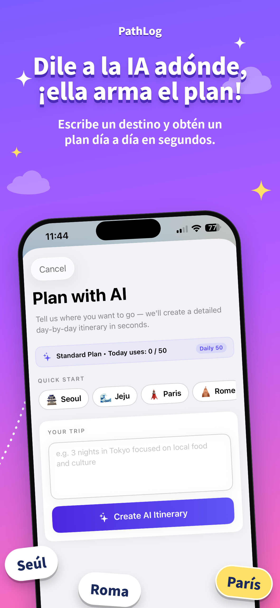
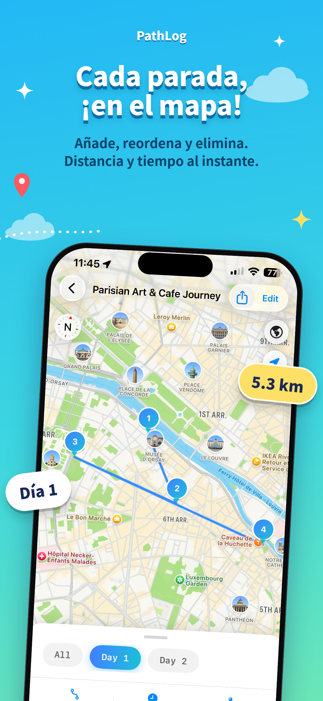

ESCAPADAS COSTERAS
ESCAPADAS COSTERAS01 — DESACELERASigue la luz
Sigue la luz
del sol.
Costas por las que vale la pena perderse.
Desde la primera idea hasta la última parada inolvidable. Convierte tus sueños de viaje en verdaderas aventuras con itinerarios impulsados por IA y mapas interactivos.
Un espacio hermoso para los lugares que sueñas, las rutas que tomas y los recuerdos que guardas.
Diseñado para iPhone y iPadLa energía de las grandes ciudades, costas tranquilas, senderos de montaña. Dondequiera que te lleve tu curiosidad, PathLog te ayuda a encontrar el camino.
ESCAPADAS COSTERASCostas por las que vale la pena perderse.
 AVENTURAS EN SENDEROS
AVENTURAS EN SENDEROSDescubre tu naturaleza salvaje.
 DESCUBRIMIENTOS URBANOS
DESCUBRIMIENTOS URBANOSCada calle guarda una historia.
Conoce la app que cuida cada detalle, para que tú disfrutes de los momentos importantes.
Explorar la app ↗

¿Viajero de fin de semana o aventurero incansable? Elige tu forma de viajar: PathLog lo une todo.
 MODO TRAVEL
MODO TRAVELGenera un itinerario día a día con IA, personaliza cada parada y navega con Apple Maps o Google Maps.
 MODO TRAIL
MODO TRAILImporta rutas KML de Google Earth, visualiza el sendero en el mapa y sigue la ruta en tiempo real.
Tres sencillos pasos. Miles de viajes posibles.
Dile a PathLog adónde quieres ir. La IA crea un itinerario día a día, o puedes importar una ruta KML.
Explora todo en un mapa interactivo. Agrega, elimina y reordena paradas hasta que quede perfecto.
Abre direcciones paso a paso, sigue tu camino y exporta en KML para compartir tus rutas favoritas.
Herramientas potentes y fluidas, desde el primer plan hasta la última parada.
Crea planes personalizados de varios días con lugares recomendados y ruta optimizada.
Consulta paradas por día, cambia su orden y sigue distancias y tiempos de traslado en vivo.
Importa o exporta archivos KML abiertos desde herramientas como Google Earth y Google My Maps.
Elige Apple Maps o Google Maps para direcciones paso a paso y rastrea tu sendero con GPS.
Organiza viajes y senderos en tu propia colección, listos para la próxima aventura.
Almacenamiento local seguro, sin necesidad de crear cuenta y en 4 idiomas.
“La mejor parte del viaje no es el plan. Es todo lo que el plan hace posible.”
HECHO PARA EL PLACER DE VIAJAR
Comienza a explorar gratis. Desbloquea más libertad cuando lo desees.
Para los curiosos, soñadores y quienes están empezando a planificar.
Para quienes creen que siempre hay un nuevo lugar por conocer.
Precios expresados en USD según la cotización del App Store local. Verifica detalles y disponibilidad en el App Store.
Una app. Un mundo de posibilidades. Disponible para iPhone y iPad.
Download on theApp Store